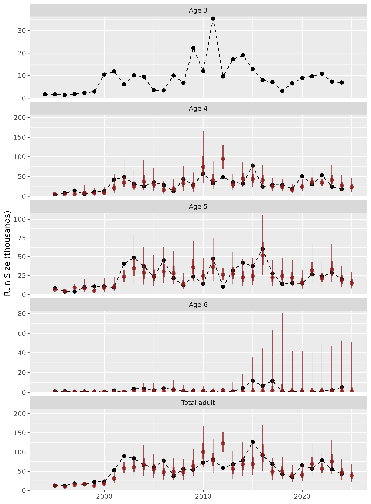

Introduction
This package is meant to forecast salmon returns using sibling regression. The core functions produce model average predictions (i.e., ensembles) of dynamic linear models (DLMs) with sibling predictors. The package also has functionality to forecast using DLMs with penalized-complexity priors, which can be an alternative to model averaging.
Installation
You can install the development (the only) version of sibregresr from GitHub with:
install.packages("devtools")
devtools::install_github("wdfw-fp/sibregresr")
library(sibregresr)
#> Error in get(paste0(generic, ".", class), envir = get_method_env()) :
#> object 'type_sum.accel' not foundGetting started
Data format
One must provide a data frame of age-specific returns by either brood- or return year, using specific column names. For example:
summer_chinook_2024 |> head(5)
#> # A tibble: 5 × 6
#> BroodYear Age3 Age4 Age5 Age6 Stock
#> <dbl> <dbl> <dbl> <dbl> <dbl> <chr>
#> 1 1984 NA NA NA 1549 Summer_Chinook
#> 2 1985 NA NA 9378 730 Summer_Chinook
#> 3 1986 3197 7869 9145 287 Summer_Chinook
#> 4 1987 2699 4450 3816 335 Summer_Chinook
#> 5 1988 2569 5310 6180 356 Summer_Chinookor
brood_to_return(summer_chinook_2024)|> head(5)
#> # A tibble: 5 × 6
#> # Groups: Stock [1]
#> Stock ReturnYear Age3 Age4 Age5 Age6
#> <chr> <dbl> <dbl> <dbl> <dbl> <dbl>
#> 1 Summer_Chinook 1989 3197 NA NA NA
#> 2 Summer_Chinook 1990 2699 7869 9378 1549
#> 3 Summer_Chinook 1991 2569 4450 9145 730
#> 4 Summer_Chinook 1992 3862 5310 3816 287
#> 5 Summer_Chinook 1993 1405 7495 6180 335If multiple Stocks are included in the data, forecasting will be conducted for each of the stocks. Returns of the youngest age class are not produced, but rather are used as a predictor for forecasting the second youngest age class. To forecast the youngest age class (e.g. “Age3”), the data would need to be augmented with a “dummy” column of a yet younger age class (e.g., “Age2”).
Forecasting
Forecasts can be developed using the forecast_fun()
function.
forecast<-forecast_fun(
df = summer_chinook_2024,
include = c("constIntOnly", "tvIntOnly", "tvSlope", "constLM",
"tvCRzeroInt", "constCRzeroInt", "tvInt"),
transformation = log,
inverse_transformation = exp,
scale_x = FALSE,
scale_y = FALSE,
perf_yrs = 15,
wt_yrs = NULL,
)
#> [1] "Time for model fitting was 17.1 secs"The arguments in the above call are set to the defaults, which
includes 7 models in the ensembles, log transforms the response and
predictor, and does not scale the predictor and response prior to
fitting. Models can be fit in normal space by specifying
transformation = identity and
inverse_transformation = identity. The response and
predictors can be Z-scored prior to fitting by specifying
scale_y = TRUE and scale_x = TRUE.
The perf_yrs argument specifies how many one-year-ahead
forecasts to conduct in order to assess performance of the model. The
wt_yrs argument specifies how many one-year-ahead forecasts
to use for performance-based model averaging (e.g., weighting based on
MAPE). When wt_yrs is NULL, the number of
perf_yrs is also used for wt_yrs. However,
they don’t encessarily need to be the same. One could specify
perf_yrs = 15 and wt_yrs = 1 to conduct a
15-year performance evaluation of the approach of weighting models based
on their performance solely in the previous year. It is also possible to
use a stretching window rather than a sliding window (i.e., include all
available years for performance and/or weighting) by setting
perf_yrs and/or wt_yrs at or above the total
number of years in the data.
If perf_yrs = 15 and wt_yrs = 15 then
perf_yrs + wt_yres + 1 = 31 years of one-step
ahead forecasts for each component (i.e., not the ensemble) model are
needed for performance-based model weighting. This is because the first
of the 15 years of performance-based ensemble forecasts uses weights
based on performance of the components in the previous 15 years. A call
to forecast_fun() will produce a warning if the number of
forecasts needed is greater that the number of data points minus five
(assuming at least five years should be available to produce the first
forecast).
Output
The output of a call to the forecast_fun() function is a
list of two data frames. The “fits” data frame has information on the
model fitting that could be useful if some of the models failed to fit.
The “forecasts” data frame has a row for every year, age, stock, and
model, including model averages. Included in the data frame are the
observed and forecasted returns as well as several performance metrics.
Definitions for all of the variables in the data frame are prodived in
the documentation for the performance_weights() function,
which can be accessed by a call to ?performance_weights().
The total forecast for returns summed across ages for a given model are
included with the sum of the component ages in the “Age” field. Fore
example, when forecasting returns of ages 4, 5, and 6, the total would
have a value of 15 in the “Age” field.
Here is an example of some of the information available in the “forecasts” data frame – the predictions of all the different ensemble models for the most recent year, ordered by MAPE for each year, and some performance metrics.
forecast$forecasts |> dplyr::filter(ReturnYear==max(ReturnYear),grepl("weight",model_name)) |> dplyr::select(Stock,Pred,MAPE,RMSE,MPE,MEr) |> dplyr::arrange(Stock,Age,MAPE) |> dplyr::mutate(dplyr::across(where(is.numeric),round))
#> # A tibble: 16 × 8
#> # Groups: Stock, Age, model_name [16]
#> Age model_name Stock Pred MAPE RMSE MPE MEr
#> <dbl> <chr> <chr> <dbl> <dbl> <dbl> <dbl> <dbl>
#> 1 4 RMSE_weight Summer_Chinook 22678 39 18993 13 1878
#> 2 4 MAPE_weight Summer_Chinook 22606 40 19475 14 2290
#> 3 4 MeanSA_weight Summer_Chinook 22794 43 20716 18 3885
#> 4 4 AICc_weight Summer_Chinook 23323 47 24932 26 6311
#> 5 5 MAPE_weight Summer_Chinook 15140 39 9690 16 -686
#> 6 5 MeanSA_weight Summer_Chinook 14880 40 9491 20 411
#> 7 5 RMSE_weight Summer_Chinook 14884 40 9615 19 87
#> 8 5 AICc_weight Summer_Chinook 13264 44 10272 29 3109
#> 9 6 MAPE_weight Summer_Chinook 936 14321 4429 14244 -2072
#> 10 6 AICc_weight Summer_Chinook 921 14479 4538 14398 -2181
#> 11 6 RMSE_weight Summer_Chinook 966 14820 4363 14746 -2007
#> 12 6 MeanSA_weight Summer_Chinook 968 15007 4345 14933 -2004
#> 13 15 MAPE_weight Summer_Chinook 38682 28 26788 5 -468
#> 14 15 RMSE_weight Summer_Chinook 38528 29 26685 6 -42
#> 15 15 MeanSA_weight Summer_Chinook 38643 30 27909 9 2292
#> 16 15 AICc_weight Summer_Chinook 37509 38 33700 17 7239Prediction intervals
Prediction intervals are based on the standard deviation between
one-year ahead predictions (i.e., forecasts) and observations in log
space. The number of years included in the standard deviation
calculations is the minimum of the number of years available or the
values specified for perf_yrs. For example, if
perf_yrs = 15 but only three years of an ensemble forecast
had been generated prior to a given year, those three years would be
used to calculate the forecast standard deviation and prediction
intervals, however, if 20 years of the ensemble forecast were available,
only the most recent 15 years would be used. The “n_sd” field in the
output of a call to forecast_fun() provides the number of
years used to calculate prediction intervals for that forecast. The
number of years used to calculate weights for an ensemble forecast is
conducted in the same way (i.e., all available up to “wt_yrs”) and the
“n_wts” field in the output gives the number of years used. This is not
relevant for ensembles based on AICc weighting as they are based on the
AICc value for models fit for the current year.
Plotting and reporting (beta version)
I’ve also included a plotting function for predictions from a given model with 50% and 90% prediction intervals. I haven’t spent much time refining this though, so it is an area for further development.
make_plot(forecast$forecasts,"MAPE_weight")
Also a function for a high-level table.
make_table(forecast$forecasts,"MAPE_weight")Age |
Forecast |
50%CI |
90%CI |
MAPE |
RMSE |
MPE |
MEr |
model_name |
|---|---|---|---|---|---|---|---|---|
4 |
22,606 |
16,986 - 30,086 |
11,259 - 45,391 |
40 |
19,475 |
14 |
2,290 |
MAPE_weight |
5 |
15,140 |
11,419 - 20,073 |
7,610 - 30,119 |
39 |
9,690 |
16 |
-686 |
MAPE_weight |
6 |
936 |
181 - 4,830 |
17 - 51,231 |
14,321 |
4,429 |
14,244 |
-2,072 |
MAPE_weight |
Total |
38,682 |
30,728 - 48,695 |
22,065 - 67,814 |
28 |
26,788 |
5 |
-468 |
MAPE_weight |
I’ve started a report template, but quite a bit more work is probably
needed. If the forecasting has already been conducted with a call to
forecast_fun() as above, you can generate the report with a
call like:
forecast_report(forecast$forecasts,
mod_name = "MAPE_weight",
output_file = "Forcast report.docx"
)but you can also feed the forecast_report() function the
raw data and the arguments that you would feed to
forecast_fun() in order to do it all in one function call.
The disadvantage of this is that you will only get the output for one
model (e.g., “MAPE_weight”) wheras if you fit save the output from a
call to forecast_fun(), you can investigate them all and
render report for multiple models if desired without having to
refit.
Under the Forecast_fun() hood
The Forecast_fun() is a wrapper around the
mod_funs(),setup_data(),fit_mods(),
and performance_weights() functions.
-
mod_funs()generates a list of functions that fit individual models. This list is passed to, -
setup_data(), which generates a nested data frame with a row for each combination of subset of the data (i.e., with some number of years cutoff the end) and model. Each row represents a model that must be fit and prediction made, and this function kicks off the process using a list-column workflow. - The
fit_mods()function does a few data transformation steps and conducts the model fitting. - Finally, the
performance_weights()function uses the fitted model objects to produce forecasts, assesses performance, generates ensembles, and generates preduction intervals.
A similar output as generated by Forecast_fun() above
could be generated by the following code
mod_list<-mod_funs(c("constIntOnly", "tvIntOnly",
"tvSlope", "constLM", "tvCRzeroInt", "constCRzeroInt", "tvInt"))
setup<-setup_data(summer_chinook_2024,mod_list,n_forecasts = 31)
fits<-fit_mods(setup)
forecasts<-performance_weights(fits,perf_yrs = 15)with the only difference being that the Forecast_fun()
function appends the observations in years for which forecasts were not
produced to the output.
Penalized complexity models
Dynamic linear models with penalized complexity can be fit by
including “PenDlm”. It is highly recommended to set
scale_x = TRUE and scale_y = TRUE when fitting
the penalized models. wt_yrs = 1 below to reduce
the number of subsets of the data to fit models to because there is no
model averaging happening.
pen_dlm_forecast<-forecast_fun(
df = summer_chinook_2024,
include = c("PenDlm"),
transformation = log,
inverse_transformation = exp,
scale_x = TRUE,
scale_y = TRUE,
perf_yrs = 15,
wt_yrs = 1,
)
#> [1] "Time for model fitting was 7.5 secs"
pen_dlm_forecast$forecasts |> dplyr::filter(ReturnYear==max(ReturnYear),model_name=="PenDlm") |> dplyr::select(Stock,Pred,MAPE,RMSE,MPE,MEr) |> dplyr::arrange(Stock,Age,MAPE)|> dplyr::mutate(dplyr::across(where(is.numeric),round))
#> # A tibble: 4 × 8
#> # Groups: Stock, Age, model_name [4]
#> Age model_name Stock Pred MAPE RMSE MPE MEr
#> <dbl> <chr> <chr> <dbl> <dbl> <dbl> <dbl> <dbl>
#> 1 4 PenDlm Summer_Chinook 24045 33 15593 7 -1667
#> 2 5 PenDlm Summer_Chinook 14678 39 9468 19 186
#> 3 6 PenDlm Summer_Chinook 872 14014 3998 13944 -1734
#> 4 15 PenDlm Summer_Chinook 39594 23 22288 1 -3216The penalized complexity model puts penalties on the across-year means of each coefficient for each year , and the standard deviation of the steps in the random walk. So if the coefficients are:
This model puts exponential-gamma penalties on all and parameters, for which there is a unique parameter for each predictor in the model:
where two unique parameters are fit for every predictor in the model.
Additionally, for all s and s is added to the log-likelihood to keep their values from shrinking so small as to cause numerical problems during optimization.
Non-sibling (e.g., climate) predictors
One can change the predictors for the penalized dlm model by providing a data frame of predictor values by return year with a column called “ReturnYear” or by brood year with “BroodYear” for joining with the salmon return data. For example
covariates_24 |> head(5)
#> # A tibble: 5 × 11
#> ReturnYear lag1_PDO lag2_PDO lag1_NPGO lag2_NPGO lag1_fall_Nino3.4
#> <dbl> <dbl> <dbl> <dbl> <dbl> <dbl>
#> 1 1961 0.563 NA 0.806 NA -0.141
#> 2 1962 -0.109 0.547 1.09 0.795 -0.376
#> 3 1963 -0.808 -0.151 -0.482 1.09 -0.395
#> 4 1964 0.0579 -0.875 -0.495 -0.528 0.808
#> 5 1965 -0.496 0.0225 0.282 -0.541 -0.988
#> # ℹ 5 more variables: lag2_fall_Nino3.4 <dbl>, smolt_sock <dbl>,
#> # lag1_log_socksmolt <dbl>, lag2_log_socksmolt <dbl>, pink_ind <dbl>The formula for the model is provided to the mod_funs()
function and the covariate data to the fit_mods() function,
but both can be passed through the forecast_fun() function
as well. When specifying the formula, “x” is used to represent the
sibling predictor. So the formula specified below would include the
sibling predictor as well as PDO and NPGO from two years prior to when
the fish return. In theory, the penalized complexity priors will shrink
the coefficients on colinear predictors, so it is ok to include
them.
pen_dlm_forecast_cov<-forecast_fun(
df = summer_chinook_2024,
include = c("PenDlm"),
transformation = log,
inverse_transformation = exp,
scale_x = TRUE,
scale_y = TRUE,
perf_yrs = 15,
wt_yrs = 1,
covariates = covariates_24,
penDLM_formula =formula("y~ x + lag2_PDO + lag2_NPGO")
)
#> [1] "Time for model fitting was 13.9 secs"
pen_dlm_forecast_cov$forecasts |> dplyr::filter(ReturnYear==max(ReturnYear),model_name=="PenDlm") |>
dplyr::mutate(model_name="PenDlm_cov") |>
dplyr::select(Stock,Pred,MAPE,RMSE,MPE,MEr) |> dplyr::arrange(Stock,Age,MAPE)|> dplyr::mutate(dplyr::across(where(is.numeric),round))
#> # A tibble: 4 × 8
#> # Groups: Stock, Age, model_name [4]
#> Age model_name Stock Pred MAPE RMSE MPE MEr
#> <dbl> <chr> <chr> <dbl> <dbl> <dbl> <dbl> <dbl>
#> 1 4 PenDlm_cov Summer_Chinook 24178 33 15564 7 -1731
#> 2 5 PenDlm_cov Summer_Chinook 14687 40 10187 17 -620
#> 3 6 PenDlm_cov Summer_Chinook 872 13574 4624 13499 -2145
#> 4 15 PenDlm_cov Summer_Chinook 39737 24 22739 0 -4497The shape and scale parameters of the gamma prior can be controlled
with the penDLM_gamma_shape and
penDLM_gamma_scale arguments to mod_funs() or
forecast_fun(). The fraction of the log of the
s
that is added to the log-likelihood can be controlled with the
penDLM_regu argument.
More general description of the modeling process
The first step in forecasting the returns of a given stock of age in year is to fit models to observed returns through year . The models available in this package are variations of a sibling regression model with time-varying intercept and slope:
where and are an intercept and a slope for the log-transformed returns of the previous age in the previous year, respectively, and both are allowed to vary across years as random walks with process error variances and respectively. The residual is assumed to be normally distributed around zero with variance . Together with a vague prior distribution for the values of and (the slope and intercept prior to the first year) these equations define the “full” sibling regression models. However, this “full” model may be overly complex for optimal prediction, and is difficult to fit in practice.
Other models are simplified versions of the full model where: 1) the
slope is assumed to constant through time (i.e.,
);
2) the intercept is assumed to be constant through time; 3) the slope
and intercept are assumed to be constant through time; 4) the intercept
is assumed to be zero (i.e.,
);
5) the intercept is assumed to be zero and the slope is assumed to be
constant through time;
6) the slope is assumed to be zero; and
7) the slope is assumed to be zero and the intercept is assumed to be
constant through time.
These models are fit using the dlm package (Petris 2010)
within this sibregresr package. The penalized version of
the full DLM is fit using RTMB (Kristensen 2024).
Ensemble forecasts are generated by taking a weighted average of predictions from multiple model. Ensemble model weights are calculated for each model in the set () of 8 models based on their AICc,
or based on their observed performance in previous years as measured by the reciprocal of mean absolute percent error (MAPE), root mean square error (RMSE), or mean symmetric accuracy (MeanSA). For example,
References
Giovanni Petris (2010). An R Package for Dynamic Linear Models. Journal of Statistical Software, 36(12), 1-16. URL https://www.jstatsoft.org/v36/i12/.
Kristensen K (2024). RTMB: ‘R’ Bindings for ‘TMB’. R package version 1.6, URL https://github.com/kaskr/RTMB.
Petris, Petrone, and Campagnoli. Dynamic Linear Models with R. Springer (2009).